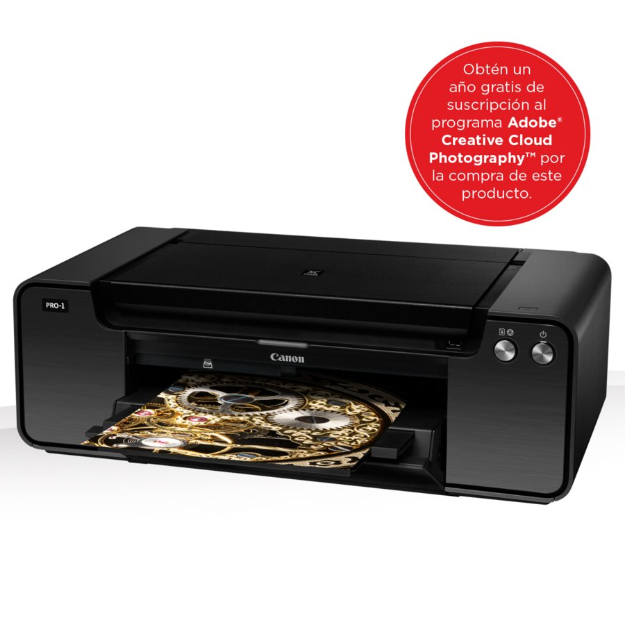

Impresora Canon
Precio 899€
Canon nos presenta la Impresora Fotográfica PIXMA PRO-1, la mejor herramienta para imprimir las fotos que realizes con tu cámara Canon EOS. La sistema de tintas ChromaLife100+ impresión con 12 tintas independientes te permite concretar al máximo la resolución y el color en tus imágenes; además, podrás imprimir directamente desde tu cámara con el sistema de impresión PictBridge. Imprime en papel fotográfico y en tamaños A3+, A3, A4 e impresión directa en discos. Retoca tus fotos con el software incluido en esta impresora: PrintStudioPro, Colour Management Tool Pro (descarga), My Image Garden con Full HD Movie Print, Easy-WebPrint EX (descarga) y Quick Menu.